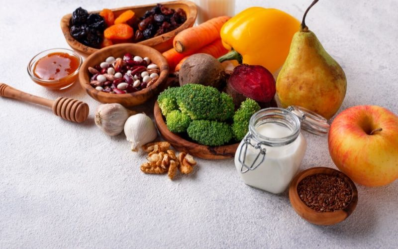

Tin tức
Organic là gì? Vì sao nên sử dụng thực phẩm hữu cơ?
Hiện nay, những cửa hàng bán thực phẩm organic mọc lên như nấm. Vậy thực phẩm organic là gì? Và tại sao mọi người có xu hướng sử dụng thực phẩm này?
1. Thực phẩm organic là gì?
Thực phẩm organic là thực phẩm hữu cơ, đạt chuẩn chứng nhận của các tổ chức uy tín như USDA (Hoa Kỳ), NASAA (Úc), Control Union (Châu Âu).
Để được gọi là thực phẩm hữu cơ, nguồn thức ăn phải đạt những chuẩn 3K:
- Không sử dụng hương liệu, phẩm màu, chất bảo quản, chất làm đặc.
- Không sử dụng hóa chất và hooc môn tăng trưởng.
- Không sử dụng nguyên liệu biến đổi gen (Non-GMO), không bị chiếu xạ tiệt trùng.
- Ngoài 3K, quy trình đánh giá nghiêm ngặt về nhà máy sản xuất, quy trình vận hành, luôn được đánh giá và cấp phép hằng năm để đảm bảo sản phẩm đạt chất lượng tốt nhất đến tay người tiêu dùng.
2. Thực phẩm hữu cơ có những loại nào?
Thực phẩm organic cũng chia làm hai loại: thực vật và động vật.
Điểm chung của thực phẩm organic là quá trình chăm sóc rất cẩn
thận, tỉ mỉ, kì công và một cách tự nhiên hóa.
Các loại rau, quả: được nuôi trồng bằng phân bón thiên nhiên
(phân bón hữu cơ), phòng trừ sâu bệnh bằng những cách thủ công
truyền thống.
Thịt, trứng, sữa: Theo một chuỗi thức ăn, gia súc được cho ăn
rau cỏ organic, không ăn thực phẩm GMO, không tiêm thuốc tăng
trưởng, ngừa bệnh bằng biện pháp tự nhiên và thường xuyên thả
rông ngoài tự nhiên.
Thực phẩm hữu cơ có những loại nào?
3. Vì sao bạn nên chọn thực phẩm hữu cơ?
Thực phẩm hữu cơ được xem là nguồn thực phẩm lý tưởng và an toàn cho bữa ăn gia đình hằng ngày.
Nếu bạn nghĩ rằng thực phẩm hữu cơ chỉ có rau xanh thì hoàn toàn sai lầm nhé. Ngoài rau, loại thực phẩm này còn có thịt, cá, trứng, sữa,.. những đồ chế biến sẵn như bánh quy, ngũ cốc,.. và điều đặc biệt ở những sản phẩm này đó là không có chất phụ gia thực phẩm nhân tạo như chất bảo quản, chất tạo màu
Không đơn thuần là phương pháp nuôi trồng thực phẩm nói không với hóa chất, thực phẩm hữu cơ còn là một mô hình nông trại giúp cân bằng hệ sinh thái và bảo tồn sự đa dạng của sinh học. Các sản phẩm muốn được công nhận là thực phẩm hữu cơ phải trải qua quá trình kiểm tra nghiêm ngặt.
4. Lợi ích của thực phẩm hữu cơ?
Thực phẩm được tươi ngon hơn vì sản phẩm chỉ có thể bán trong thời gian ngắn, không để lâu vì không chứa chất bảo quản nên thực phẩm sẽ nhanh chóng hư hơn.
Tuy nhiên, vì độ tươi ngon, nên hàm lượng dinh dưỡng vitamin và khoáng chất cũng cao hơn 15 % so với thực phẩm thông thường.
Độ tươi ngon của sản phẩm
An toàn cho sức khỏe của trẻ
Sử dụng thực phẩm organic, bạn sẽ hạn chế được những rủi ro trẻ bị ngộ độc thực phẩm hoặc dung nạp một số chất độc từ thuốc trừ sâu gây ảnh hưởng đến quá trình phát triển sau này.
Theo một nghiên cứu ở Mỹ, hơn 80 % photpho trong cơ thể chúng ta được tìm thấy từ thức ăn có chứa thuốc trừ sâu.
Chính vì thế, thực phẩm organic sẽ đảm bảo cho trẻ một sự phát triển an toàn và lành mạnh nhất.
An toàn cho sức khỏe của trẻ
Mức độ nitrat trong thực phẩm hữu cơ thấp hơn
Các nghiên cứu đã chứng minh, nồng độ nitrat cao trong các thực phẩm organic thấp hơn 30% so với các thực phẩm thông thường.
Nồng độ nitrat cao chính là nguyên nhân làm tăng nguy cơ mắc một số bệnh ung thư, chúng còn ảnh hưởng đến khả năng vận chuyển oxy đến các tế bào trong cơ thể của trẻ.
Sữa, thịt hữu cơ chứa acid béo có lợi cao hơn
Sữa hữu cơ và các sản phẩm từ sữa chứa axit béo omega 3, sắt, vitamin E và một số Carotenoids cao hơn sản phẩm thường, giúp làm giảm nguy cơ mắc các bệnh về tim mạch.
Tăng cường hệ miễn dịch
Nếu như thực phẩm bình thường bị tiêm vào các chất biến đổi gen (GMO) thì thực phẩm organic lại nói không với điều đó.
Đây cũng chính là lí do thực phẩm hữu cơ giúp bảo vệ hệ thống miễn dịch của bạn được khỏe mạnh.
Bình luận